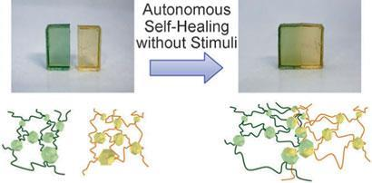
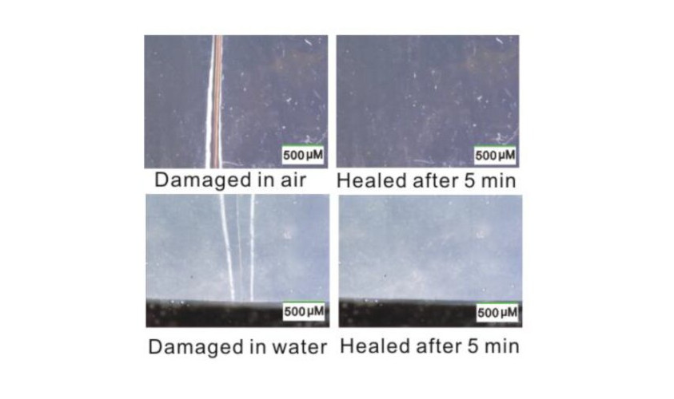
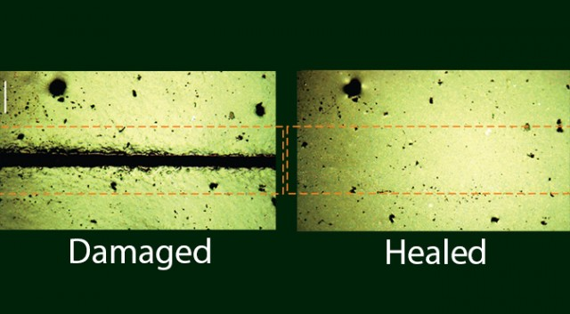

Self-Healing Materials : The Future of Sustainable & Self Sustainable Materials
Imagine a cracked smartphone screen that repairs itself overnight, or a bridge that can automatically fix tiny fractures before they become dangerous. This is not science fiction—these are examples of self-healing materials, a rapidly advancing field in materials science designed to extend the life and safety of products and structures.

What Are Self-Healing Materials?
Self-healing materials are specially engineered substances that can repair damage automatically or with minimal external intervention. Just like human skin heals after a cut, these materials can restore their functionality after being scratched, cracked, or otherwise damaged. The goal is simple: increase durability, reduce maintenance costs, and improve safety.
In this method, tiny capsules filled with a healing agent are embedded in the material. When a crack forms, it breaks these capsules, releasing the liquid inside. This liquid then hardens and seals the crack.
- Example: Self-healing coatings used in automotive paint.
- Advantage: Simple design and effective for small damages.
- Limitation: Healing works only once per location because capsules are consumed.
2. Vascular Systems
Inspired by biological systems, this method uses microchannels inside the material that continuously supply healing agents; Similar to blood vessels in the human body.
- Can provide repeated healing because the healing agent can be replenished.
- Often used in advanced composites and aerospace materials.
3. Intrinsic (Autonomous) Healing
These materials rely on their own molecular structure to repair damage. When triggered by heat, light, or pressure, the material's chemical bonds can re-form. Common in polymers with reversible bonds.
- Advantage: Can heal multiple times without adding external substances.
- Limitation: Often requires specific conditions like heating.

4. Types of Materials
Self-healing behavior has been developed in a wide range of materials:
- Polymers (plastics and rubbers): Most common, used in coatings and electronics.
- Concrete: Contains bacteria or chemicals that produce limestone when cracks appear.
- Metals: Early-stage research shows metals can heal microscopic defects under certain conditions.
- Ceramics and composites: Used in aerospace and high-temperature applications.
5. Real-World Applications
Self-healing materials are already making an impact across multiple industries:
-Construction-
Self-healing concrete can seal cracks automatically, preventing water leakage and steel corrosion. This significantly extends the life of buildings, roads, and bridges.
-Automotive and Aerospace-
Aircraft and car components use self-healing composites to increase safety and reduce maintenance costs. Minor damages can repair themselves before becoming serious.
-Electronics-
Flexible electronics and wearable devices benefit from self-healing polymers that can restore electrical conductivity after being damaged.
-Coatings and Paints-
Scratch-resistant coatings on phones, cars, and furniture can heal surface damage, maintaining appearance and performance.

-Benefits-
Self-healing materials offer several important advantages:
- 1. Longer lifespan of products and infrastructure
- 2. Reduced maintenance and repair costs
- 3. Improved safety by preventing failure
- 4. Environmental benefits (less waste, fewer replacements)
-Challenges-
Despite their promise, there are still challenges to overcome:
- Cost: Advanced self-healing systems can be expensive to produce.
- Scalability: Producing these materials in large quantities is still difficult.
- Performance trade-offs: Some materials may sacrifice strength for healing capability.
- Limited healing capacity: Some systems can only heal a limited number of times.
-The Future of Self-Healing Materials-
Research in this field is growing rapidly. Scientists are exploring nanotechnology, bio-inspired systems, and smart materials that can respond to environmental changes. In the future, we may see:
- Fully autonomous materials that repair large-scale damage
- Self-healing infrastructure in smart cities
- Advanced medical implants that heal inside the human body
-Conclusion-
Self-healing materials represent a major step forward in engineering and sustainability. By mimicking natural healing processes, they offer smarter, more resilient solutions across industries. Although still developing, these materials are set to play a crucial role in shaping the future of technology and infrastructure.
Share this article: